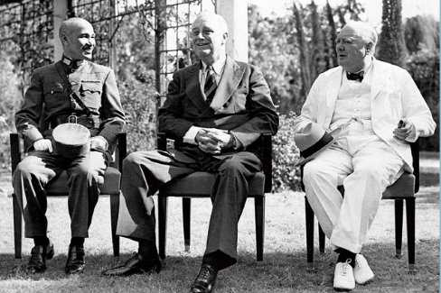
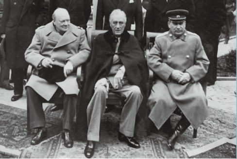
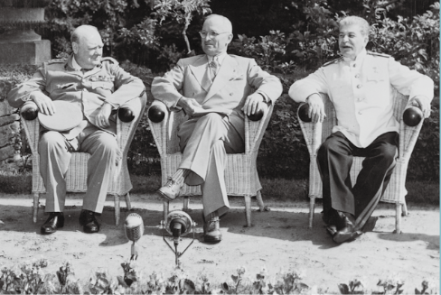

5
독립 국가 건설 노력
1930년대 이후 한국인들은 만주와 중국 관내에서 적극적인 항일 무장 투쟁 전개. 1940년대에는 독립에 대한 희망이 높아지며 독립 이후 국가의 모습 구상.
- 17
만주에서 항일 연합 전선을 만들어 투쟁하다
만주 사변(1931), 한·중 연합 작전, 사회주의 세력의 항일 유격 투쟁
- 18
중국 관내에서 독립운동을 전개하다
한인 애국단의 의열 투쟁, 민족 혁명당 결성, 조선 의용대 창설
- 19
건국을 준비하다
임시 정부 재정비, 한국광복군 창설, 국내외 건국 강령, 국제 사회의 한국 독립 약속
17
만주에서 항일 연합 전선을 만들어 투쟁하다
만주 사변(1931)과 만주국 수립으로 만주 일대가 사실상 일제의 점령 지역으로 변화. 중국 내 항일 감정이 높아지며 한국 독립군과 조선 혁명군이 각각 중국인 부대와 연합하여 항일 전쟁 전개.
중국 호로군과 연합 : 쌍성보·사도하자·대전자령 전투.
중국 의용군과 연합 : 영릉가·흥경성 전투.
- →
연합 작전의 위축
일제의 만주 장악과 거센 공격으로 중국군의 활동 위축, 독립군의 활동 곤란. 지청천 등 일부는 관내로 이동하여 임시 정부에 합류, 한국광복군 창설에 기여. 조선 혁명군은 양세봉 전사(1934) 이후 세력 약화, 1930년대 후반까지 항일 투쟁 전개, 일부는 동북 항일 연군에 가담.
17
만주에서 항일 연합 전선을 만들어 투쟁하다
만주 사변(1931) 이후 중국 공산당이 항일 무장 투쟁 주도. 만주의 한인 사회주의 세력도 항일 유격대를 조직하여 중국 사회주의 세력과 연합.
- 1
동북 인민 혁명군(1933) → 동북 항일 연군(1936)
중국 공산당이 각지의 항일 유격대를 규합하여 동북 인민 혁명군 조직. 모든 반일 세력을 받아들인다는 원칙 아래 동북 항일 연군으로 확대·개편.
- 2
조국 광복회(1936)와 보천보 전투(1937)
동북 항일 연군 내 한인 유격대가 사회주의 세력과 민족주의 세력을 포함하여 조국 광복회 결성. 함경남도 보천보 등에서 경찰 주재소와 면사무소 등 일제의 통치 기구 파괴.
- 3
1930년대 후반, 소련으로 이동
일본군의 대공세로 동북 항일 연군이 큰 타격을 입고 남은 부대 대부분 소련 연해주로 이동. 일부 한인 유격대는 광복 이후 소련군을 따라 입국하여 북한 정권 수립에 핵심 역할 수행.
18
중국 관내에서 독립운동을 전개하다
국민 대표회의 결렬 이후 재정난 등으로 임시 정부의 활동 위축. 만보산 사건(1931)으로 중국인의 반한 감정이 커져 독립운동 곤란. 김구가 임시 정부에 활기를 불어넣고자 한인 애국단 조직(1931).
일본 도쿄에서 일왕이 탄 마차에 수류탄 투척. 일왕 처단에는 실패했으나 일제에 큰 충격. 중국 신문의 아쉬움 섞인 보도에 반발한 일본인이 중국인을 습격하자, 일제가 이를 빌미로 상하이 침략(상하이 사변).
상하이 훙커우 공원에서 열린 일왕 생일 및 상하이 사변 승전 기념식에 폭탄 투척. 일본군 장교와 여러 고위 관리 처단.
- →
결과 — 한·중 항일 연대의 계기
중국인의 반한 감정 크게 완화. 중국 국민당 정부의 대한민국 임시 정부 본격 지원.
18
중국 관내에서 독립운동을 전개하다
만주 사변(1931) 이후 일제의 탄압으로 만주의 독립운동 단체 대부분이 중국 관내로 이동. 노선의 차이를 넘어 여러 독립운동 단체의 통합 노력.
- 1
민족 혁명당 결성 (1935)
난징에서 민족 혁명당 (의열단 + 조선 혁명당 + 한국 독립당 등) 결성↔임정 고수 김구 ‘한국 국민당’(1935) 결성김원봉의 의열단 계열이 당을 주도하자 조소앙·지청천 등 민족주의 계열 이탈.
- 2중일 전쟁 이후(1937)김구·김원봉 통합 시도 실패(1939)한국 국민당 + 민족주의 세력
한국 광복 운동 단체 연합회 결성.
조선 민족 혁명당 + 사회주의 세력조선 민족 전선 연맹 결성.
- 3
조선 의용대 창설 (1938) → 화북 이동
조선 민족 전선 연맹이 중국 국민당 정부의 지원으로 조선 의용대 창설. 중국 관내 최초의 한인 무장 부대로 정보 수집·포로 심문 등 후방 공작 전개. 다수 대원은 적극적인 항일 투쟁을 위해 화북으로 이동하여 ‘조선 의용대 화북 지대’ 결성(1941). 이동하지 않은 병력 → 김원봉의 지휘 아래 한국광복군에 합류(1942).
19
건국을 준비하다
윤봉길 의거 이후 일제의 탄압 심화로 임시 정부가 상하이를 떠나 항저우 → 창사 → 광저우 → 충칭 이동. 정당·정부·군대 체제 정비.
- 1
한국 독립당(1940. 5.) · 한국광복군(1940. 9.)
김구·지청천·조소앙 등이 한국 독립당 결성. 충칭에서 중국 국민당 정부의 지원으로 한국광복군 창설. ‘한국 광복군 행동 준승 9개항’ 요구 : 중국군의 간섭(~1944). 주석 중심의 단일 지도 체제 마련, 김구를 주석으로 선출. 정당(한국 독립당)·정부(임시 정부)·군대(한국광복군) 체제 정비.
- 2
좌우 통일 전선 (1942)
김원봉이 이끄는 조선 민족 혁명당의 임시 정부 참여, 조선 의용대 병력 일부의 한국광복군 합류. 좌우익 통일 전선의 모습 구비.
- 3
한국광복군의 활동
1941년 대일 선전 포고 후 연합군의 일원으로 인도·미얀마 전선 등에 파견되어 선전 활동과 포로 심문 담당. 1945년 5월부터 미국 전략 정보국(OSS)과 협력하여 특수 훈련, 국내 진공 작전(국내 정진군 편성) 계획. 일제의 항복으로 작전 실행 불발.
19
건국을 준비하다
19
건국을 준비하다
일제의 패망 기대가 커지며 각 세력이 통일 전선 형성에 노력, 독립 이후 세울 국가의 이념과 체계 구상.
건국 강령 발표와 국내외 민족 운동 세력 연대
1930년대 후반 세계적 연대(합작) 분위기 : 미국 + 소련, 제2차 국공 합작 → 국내외 항일 세력 연대 시도.
대한민국 임시 정부 건국 강령
대한민국 임시 정부 — 조소앙의 삼균주의 기초- 정치·경제·교육의 균등, 민주 공화국 건설 지향
- 보통 선거 실시, 토지와 주요 산업의 국유화
- 무상 교육 실시, 노동권 보장
조선 독립 동맹의 건국 강령
김두봉 주석 — 군사 조직: 조선 의용군(1942)- 보통 선거에 의한 민주 공화국 수립
- 남녀평등권 확립, 대기업 국유화
- 토지 분배, 의무 교육 시행
조선 건국 동맹의 건국 강령
여운형 주도 — 비밀 결사- 각 세력의 대동단결, 일본 제국주의 세력 축출
- 연합국과 협력하여 대일 연합 전선 형성
- 민주주의 원칙, 노동 대중의 해방 중시
19
건국을 준비하다
제2차 세계 대전에서 승기를 잡은 연합국이 전쟁 수행과 전후 처리 문제를 논의하며 여러 차례 회담 개최, 한국의 독립 문제 논의.

미국·영국·중국 대표 참석. 한국의 독립 문제 최초 논의, ‘적당한 시기에 한국을 자유롭고 독립하게’ 할 것 명시(카이로 선언).

미국·영국·소련 대표 참석. 독일 분할 점령, 소련의 대일전 참전 비밀 결의, 자유 선거에 의한 정부 수립 등의 원칙 마련.

미국·영국·중국 대표 참석. 일본에 무조건 항복 요구, 카이로 선언의 한국 독립 재확인(포츠담 선언).
일본이 포츠담 선언을 거부하자 미국이 히로시마·나가사키에 원자 폭탄 투하, 소련의 대일전 참전(1945. 8. 9.). 일본의 무조건 항복으로 제2차 세계 대전 종결, 우리 민족 광복.